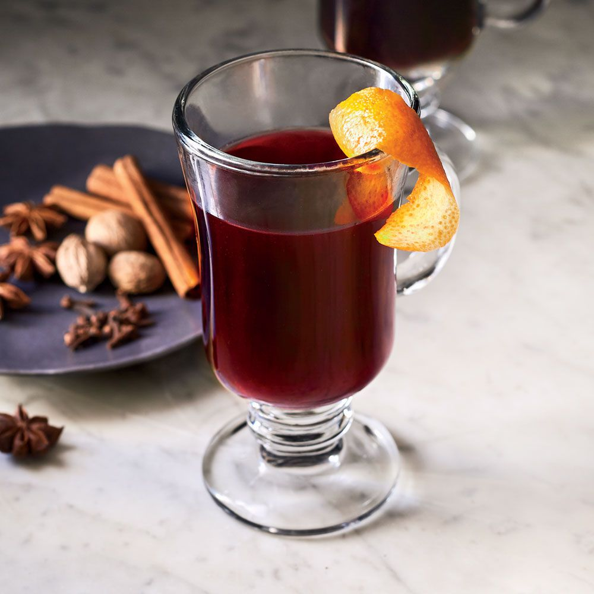

Mulled Wine

Mulled wine is normally only something that I associate with the winter (or, really just Christmas, if I'm being honest) but its an easy drink to make and one that I associate with dead trees and roaring fireplaces. And also it's an easy drink for me to write out the recipe for.
Ingredients
1 bottle (750 ml) of your favorite wine
1/4th (~60 ml) cup of brandy or orange liqueur
8 whole cloves
2 star anise
2 cinnamon sticks
2 to 4 tablespoons (30 to 60 grams) of sugar, honey, or maple syrup. Sweetner substitutes work, too.
Optional: Slices of oranges or lemons
Steps
- Combine all of your ingredients in a large saucepan, and stir to combine.
- Cook the combination over medium-high heat until it barely reaches a simmer, you do not want it to bubble. Reduce heat to low and cover, letting it simmer for at least 15 minutes or up to 3 hours.
- Strain your mixture through a fine mesh strainer to remove orange slices, cloves, cinnamon sticks and anise. Sample your mulled wine and add more sweetner, if desired.
- Serve in your favoite mugs and enjoy the winter just outside of your window.
Return Home